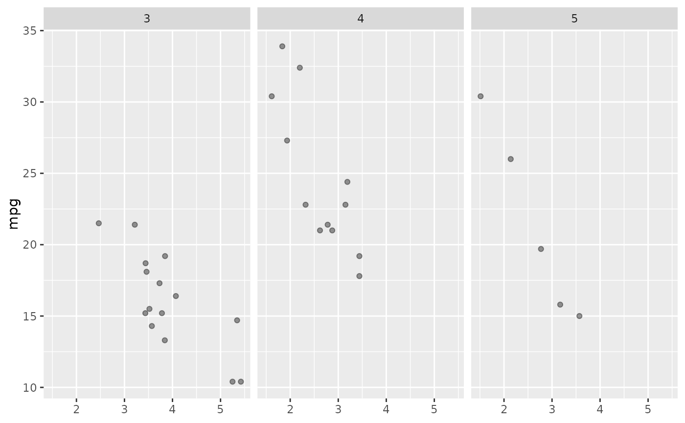

ggcall_add_assignments.RdThis function modifies a `ggcall()` object by adding variable assignments to it, ensuring that any atomic variables or non-atomic objects referenced in the environment are explicitly assigned in the construction code.
ggcall_add_assignments(call, vars = extract_names(call))A symbol (variable name) pointing a `ggcall_code` object, which represents a ggplot construction call generated by the `ggcall()` function.
a `character` value. Optional vector of variable names to include from ggcall environment. By default all environment variables connected with the call are added. Please be careful when updating this argument.
A modified call with additional assignments for all the variables used in the construction code, ensuring the plot can be fully reconstructed from the code.
Currently only atomic variables are supported to be assign directly. More complex variables are referenced to ggcall environment.
# Example: Create a function which combines a few ggplot layers
# Typically, it will be a function from your R package where you implemented ggcall
func <- function(data, x, y, bool = TRUE) {
# layers have to be added with +
gg <- ggplot(data, aes(x = !!as.name(x), y = !!as.name(y))) +
geom_point(alpha = 0.4) +
facet_grid(~gear)
if (bool) {
gg <- gg + theme(axis.title.x = element_blank())
}
func_internal <- function(gg) {
gg + labs(x = "custom xlab")
}
func_internal(gg)
}
plot_call <- ggcall(func(mtcars, "wt", "mpg"))
# Optionally: Add assignments
plot_call_with_assignments <- ggcall_add_assignments(plot_call)
styler::style_text(
paste(deparse(plot_call_with_assignments), collapse = "\n")
)
#> Warning: Could not use `colored = TRUE`, as the package prettycode is not installed.
#> Please install it if you want to see colored output or see
#> `?styler::print.vertical()` for more information.
#> {
#> y <- "mpg"
#> x <- "wt"
#> "# data is data.frame"
#> data <- ggcall_env(plot_call)[["data"]]
#> "# ggcall call"
#> ggplot(data, aes(x = !!as.name(x), y = !!as.name(y))) +
#> geom_point(alpha = 0.4) +
#> facet_grid(~gear) +
#> theme(axis.title.x = element_blank()) +
#> labs(x = "custom xlab")
#> }
eval_ggcall(plot_call_with_assignments)

# Will Fail as data is needed and skipped
# eval_ggcall(ggcall_add_assignments(plot_call, vars = c("x", "y")))